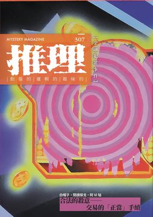

《推理》雜誌於1984年11月由「台灣推理第一人」林佛兒先生創刊，至2008年共發行282期。停刊16年後，由台灣犯罪作家聯會取得獨家授權，於2024年6月復刊，2024年11月推出創刊四十周年紀念專號，並於2025年正式恢復月刊形式發行，2026年持續深化每期的主題企劃，設定了具有閱讀趣味的不同情節故事。 307期主題：「鏈」。當作案工具只是一張簽了名的文件，辦案就成了查一筆錢經過哪些人的手。本期從一八九六年的歐洲騙局讀到當代的定價、投資與理賠。每一道手續都有人簽名、有憑據可查，錢是在哪一手變成別人的？「鏈」說的就是這一串手續，單看每一步都沒問題，接起來是一樁犯罪。 《推理》雜誌長期作為本土作家發表創作的重要園地，也將持續構建更寬廣、完整的月刊文學系統，以經典與創新並行的編輯策略，持續引領台灣犯罪推理的前沿發展！令人引頸期待！ 本期收錄內容如下： ◎封面故事◎ 12000000◎吳宏德 畫面上的痕跡全部來自未中獎的刮刮樂：收集大量被刮除後留下的塗層，還原、重組到畫布上，再放進象徵物質慾望的元素。刮開那層皮囊，底下多半什麼都沒有；人們仍然一次次回到同一個迴圈，因為願意相信下一次會不一樣。 ◎本期動態◎ 犯罪作家困在自己的題材裡——評〈推理殺人事件〉◎蘇那 暴雪山莊與多重密室對資深讀者並不陌生，新奇之處在於被困住的六個人都是要參加小說比賽的作家。與世隔絕的荒野旅館流傳著紅衣女鬼的傳說，第一個死者出現後，擅寫推理的那一位擔起偵探。評論談的是細節被藏進日常的方法——從死者的妝容、從嫌疑人服飾上的些微破綻，反向推出手法與動機。 主編紀事◎洪敍銘 本期主題定為「鏈」。金融本來就是連續動作：合理的名目、兩造簽名、層層經手，數字才開始真正移動。市場的定價、朋友之間的邀請、家人替彼此買下的保障、宮廟裡的香油錢，這些機制起初都是為了降低風險而建立，最後卻成了有心人省下解釋力氣的途徑。即使沒有血腥畫面，數字的線索多半斷在一個人付出的代價上。 當好萊塢式英雄直面金融黑幕——評《銀行家的妻子》◎沐謙 雙線交替的金融犯罪小說，寫的是離岸銀行的洗錢與避稅。一名記者被上司託付接洽線人，數天後上司在自宅遭到殺害；另一邊，隨丈夫外派日內瓦的妻子接獲丈夫墜機的消息，死因疑點重重。兩條線最後都通到同一間投資銀行：檯面上信譽良好，檯面下替高風險客戶服務。評論問的是，在這樣的系統裡當吹哨者要多大的勇氣。 犯罪推理大家觀◎喬齊安 三本書的題材從詐騙、竊盜到連法律都奈何不了的詐欺。沙棠《斬手》裡，貧窮大學生為了阿嬤的手術費淪為集團車手，車手、收水手、水房、話術手、機房逐層揭開；佐藤青南《豪宅盜犬事件》裡富婆遇害、財物被搶，凶手連狗都帶走；J.W. 奧克《怪奇邪教檔案錄：或許我們都是追隨者》整理三十個臭名昭彰的邪教。 ◎主題特輯◎ 【合法的殺意——交易的「正當」手續】 金融犯罪很少留下血跡，真正動手的工具只是一張紙、一個由受害者自己簽名交出去的證明。交易的手續即使完全正當，辦案的人還是得從裡面看出這是怎麼一回事。本輯三篇極短篇環繞市場的定價、朋友之間的投資邀請、家人替彼此買下的保障——這些原本都靠信任運作，而信任也讓行騙的人省下所有力氣。 價格正常◎白帽子 口罩奇缺的時候，普通款從一片兩元翻成十倍，藥局還規定整盒起跳、不零賣，民眾團團圍在街上大鬧，痛罵商人無良。有人受夠了，當眾撥通口罩價格異常檢舉專線並開擴音，等著替大家討個公道。接線員語調冷靜專業，一題一題問下去：原本缺不缺口罩？原本要不要排隊？您的命值多少錢？ 名為帝國的戲◎閱讀探戈 浴缸大得能容十人，裡面盛的是香檳。派對主人被所有人稱為國王，賓客不乏政商名人與當紅明星，一夜豪擲上百萬只為了開心。離場時有個一身廉價行頭的男子附耳說：會這樣花錢的人有問題。一週後，國王名下的電影公司辦了一場「私人」投資說明會，導演、監製、編劇、配樂與演出名單一字排開。 禮物◎阿Vi牯 工廠轉型後提早退休的男人，三年前妻子車禍過世，搬到山腳下的小鎮，與喪夫一年的婦人認識交往三個月就閃電結婚。在外地電子公司當工程師的兒子沉默寡言，一次放假回家，家裡多了一位新媽媽。半年多後，一家三人到山區風景區遊玩，新婚的妻子疑似為了自拍，失足墜落山谷。 ◎編劇 x 作家訪談專輯◎ 小說與劇本之間——懷德 × 班傑明訪談◎懷德、班傑明；洪敍銘整理 兩位受訪者既寫小說也寫劇本，入行的路卻不同：一位在高中碰上網路小說連載的熱潮，第一次連載就被出版社簽下；一位在外島服役時眼角膜遭棘阿米巴原蟲感染，返家休養近一年，在可能永久失明的壓力下每天寫。話題從兩種身分怎麼切換？到金融犯罪題材的處理分寸在哪裡？再到劇本交出去以後被導演與現場改動的經驗。 ◎第九屆林佛兒獎決選作品選◎ 湯底◎莫三 剛調任鄉下的年輕警察在牛肉麵店吃麵，居民衝進來通報：一名老農陳屍在農田水路裡。那位老農拒絕配合建商開發，是地方上著名的釘子戶。警方判定酒醉失足，但死者血液裡沒有酒精，頭部也沒有昏迷的傷；水路平日乾涸，只有固定時間排入工業用水。神智清醒的成年人，怎麼在僅及腳踝的淺水裡溺死？ 〈湯底〉短評◎既晴 決選評審寫的一則簡評，開宗明義提醒內容涉及謎底。這篇沒有停在當代的土地爭議：從一樁釘子戶的離奇死亡查下去，地方建設、選舉政治、建商利益與居住權的衝突一一浮現，線索一路通到村落深處；那些看似散漫、其實彼此呼應的安排，簡評也逐項點了出來。 ◎本土創作小說◎ 不了・了之◎維然・杜瓦爾 租屋網站上出現一間幾乎不可能存在的物件：奶茶色系、無印原木風格的十二坪小套房，家電家具全配，連明星後台那種大片梳妝鏡台都有。在台北市，月租九千。會不會是凶宅？查了一下，然後想算了——是又怎樣。 灣城鈴眠◎北蒙勒 兩間店鋪之間夾著一道樓梯，左側牆上嵌著木門，門上的玻璃牌寫著「風臨｜私人業務處理」。推門進去，鈴聲響了一聲，室內的燈亮著，正對門的牆有一半被堆積如山的紙箱遮住。一個男人坐在辦公桌上抱著雙腿看電視，見到進門的老人，隨手關掉電視跳下桌。 慾望的香油◎班傑明 社會版頭條：中南部一名男子瘋狂迷戀廟會的鋼管女郎兼網紅，捧著借來的一百八十八萬現金逼婚遭拒，於是把自製炸彈偽裝成超商包裹送出去，網紅慘遭炸傷毀容。故事就從這則報導寫起，接著讓電視名嘴與網路論壇各自翻案，一層一層往下問。 免賠額◎黃鶴權 第一次走進保險公司非車理賠部辦公室那天，空調壞了一整個夏天。門一推開，一股熱浪裹著複印紙和泡麵味撲過來；靠窗的立式空調外殼發黃，出風口掛著一截灰撲撲的布條，葉片紋絲不動，牆角的老風扇吱呀呀轉著頭，把桌上的單子吹得嘩啦啦響。這一行的判斷，就從這間辦公室開始。 ◎名家作品大觀◎ 墨西哥先知事件 (1896)◎葛蘭特・艾倫／陳典家譯 南非金融鉅子帶著妹夫兼秘書到里維埃拉度假，每天從尼斯英國人散步大道的飯店走去蒙地卡羅的賭場。當地正轟動一位讀心術士，追隨者喚他墨西哥先知，據說連中獎號碼他都說得中。這位金融鉅子精明幹練，從不被普通騙子耍弄——這回遇上的，就不是普通騙子。 鑽石袖扣事件 (1896)◎葛蘭特・艾倫／陳典家譯 這回是瑞士。旅遊旺季過了大半，沒有預訂飯店的一行四人仍靠著萬能的金鑰匙在盧塞恩安頓下來，住進看得見湖景的房間。公共餐桌上，同桌旅人袖口那對鑲鑽的金鏈袖扣，形制竟和金融鉅子夫人那條缺了兩顆寶石的印度項鍊如出一轍。 古老名畫事件 (1896)◎葛蘭特・艾倫／陳典家譯 南非人待不住，在梅費爾頂多六週就得出走。初秋，一行人到布萊頓的大都會飯店下榻。到的第一個週日早上，兩位女士戴了帽子上教堂，金融鉅子和秘書走去國王路吹風，看海峽的浪。過兩天，有人向他提起一幅畫，說那是林布蘭的真跡，畫中人還是他們家旁系的祖先。 紳士怪盜之父──葛蘭特・艾倫◎白帽子 英國書店在一八九五年冒出一批新書：《沒做那件事的女人》《不肯做那件事的女人》，全都在回應同一本《做了那件事的女人》。一八九六年起連載的系列裡，主角是一位擅長喬裝的怪盜，比神偷萊佛士早了兩年，更早於亞森．羅蘋；同一位作者筆下還有一位環遊世界的女偵探，遺作則由柯南．道爾接手寫完。 ◎精選翻譯小說◎ 粉紅色的邊緣 (1915)◎法蘭克・弗羅斯特、喬治・迪爾諾特／陳典家譯 這位富翁向來被當成毫無人性、一輩子只想著累積財富的人，現在他的手在發抖。女兒失蹤三天了，信裡卻沒有要錢——如果是勒索，為什麼不要錢？只要能不讓女孩冒險，什麼代價都願意付；可是先後找了兩家偵探社，連一點蛛絲馬跡都沒有。 ◎推理集錦◎ 【犯罪實案現場】莊福來命案◎艾德嘉 一九八三年五月，一名二十八歲的男子開著貨車從新竹出發送貨，在桃園楊梅一處下坡彎道拋錨。他下車查看，被後方疾駛而來的轎車撞上，隔天在醫院過世。那一年年初，他才剛從泥水工被提拔為公司的業務經理，車禍前一個月結婚。父母很快發現一絲不對勁：老闆在他過世沒幾天，就忙著去領他的人壽保險金。 【灰色檔案室】情報為何政治化？◎輝彌 勒卡雷《巴拿馬裁縫》裡，一名擅長說謊的裁縫被軍情六處的人抓住前科當把柄，要他當情報線人。他手上沒有可用的情報，最後用謊言編織成故事交了上去，再被加上一點穿鑿附會送進大使館。專欄拿葛林《我們在哈瓦那的人》並置對讀，談情報政治化：政府心中先有了答案，再找人來幫忙說故事。本專欄暫時休止。 【另眼看劇】金融題材電影的「種田流」玩法◎陳俊偉 《華爾街之狼》的焦點落在體制內的貪婪，《大賣空》則是體制外對整套體系的理性批判。專欄要引介的是第三部——《蜂鳥計畫》：兩個交易所之間同一檔股票的報價不同，就有了時間差套利的空間；為了爭取那點毫秒優勢，得鋪設一千六百公里的線路，跨越各種地形與各州法規，還要說服釘子戶。 【遊戲開始 Games start】《Orwell》◎賴特 操作環境模擬一套監控軟體，玩家扮演境外調查員，潛入目標對象的網路銀行，一筆一筆翻他的帳單明細與跨國匯款紀錄。不必扣下扳機，也不用直面受害者，只要在冷氣房裡點一點滑鼠，就能靠數據審查調動國家的武裝力量。同一筆固定匯出的款項，可以讀成資助激進組織的黑錢，也可以讀成慈善捐款，而系統只准你選一邊。 2026幻華中篇懸疑創作小說獎 二〇二六年九月五日起徵件，十一月三十日截止。徵的是三萬九千五百字到四萬零五百字的中篇懸疑小說，繁體中文創作；入選作品保證出版，以單行本發行並收入「暗格」書系第二格，二〇二七年內出版。